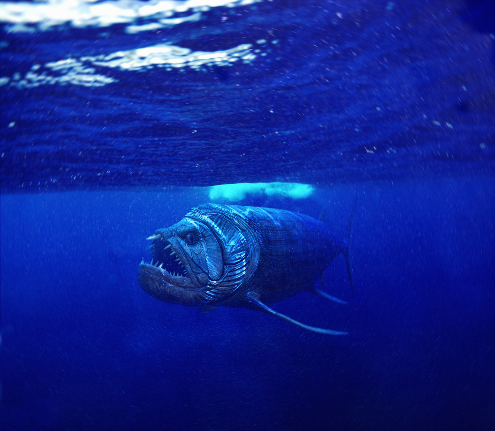

The Western Interior Seaway was a large body of water that was where the Great Planes are today. It connected the Artic ocean to the Carribian and split the United States of Amarica anf Canada in to two contanents called Laramidia and Appalachia. The Western Interior Seaway was a haven for many predators from sharks to large bony fish to Mosasaurs. And crazy enough, they all coexisted peacefully until the astroid that killed the dinosaurs happened. The Seaway happened when North America begain to sink due to techtonic plates and sea levels begain to rise due to global warming. This acually may happen to us soon if we don't stop global warming. But here are some of the predators of this ancient seaway.
Image by Aram-Rex from DevianArt
The Mosasaur was a facinating creature that lived in the Western Interior Seaway. This beast was a reptile and lived during the Late Cretaceous and was apex predator. It hunted all types of marine creatures including sharks and turtles. It is still being debated if the Mosasaur was more like a snake or a lizard. The Mosasaur was not a crocadile instead they are apart of a different wing of reptiles called Lepidosaurs when crocadiles and dinosaurs are apart of Archosaurs. Also, some Mosasaur spieces could grow up to 56 feet in length making it larger than the T.Rex. These creatures went out with the dinosaurs so that is another reason people mistake these beasts as dinosaurs. They lived almost all other ancient bodies of water. All of this shows that Mosasaurs were amazing creatures of the Western Interior Seaway.
Image by Johnson Mortimer from Wikimedia Commons.
The Xiphactinus was a terror for all of the Westren Interior Seaway. It could swallow fish half the size of it whole. They grew up to 17 feet in length and had a upturned jaw. Although it was such a ferocious predator it still had predators. The shark, Cretoxyrhina was the most well known predator of Xiphactinus but most of the predators were unknown meaning Xiphactinus was close to the top of the food chain. It lived in deeper water so it had large eyes and a large head. Some of these fish died from choking because they tried to swallow some larger fish. All and all this was a amazing fish that ruled the Westren Interior Seaway.